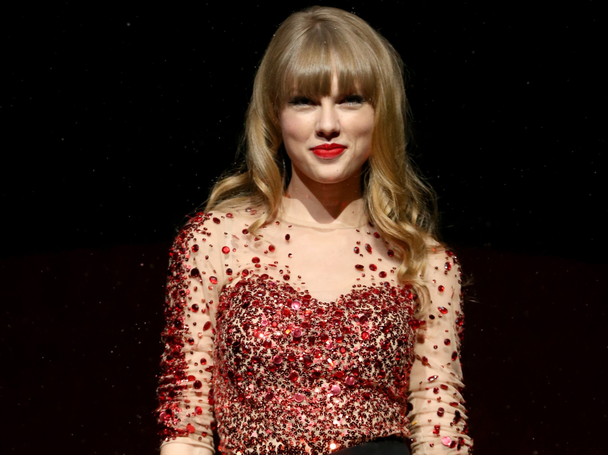
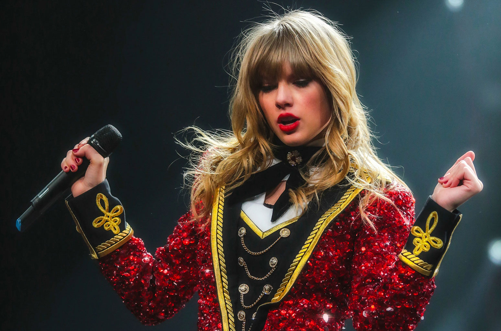
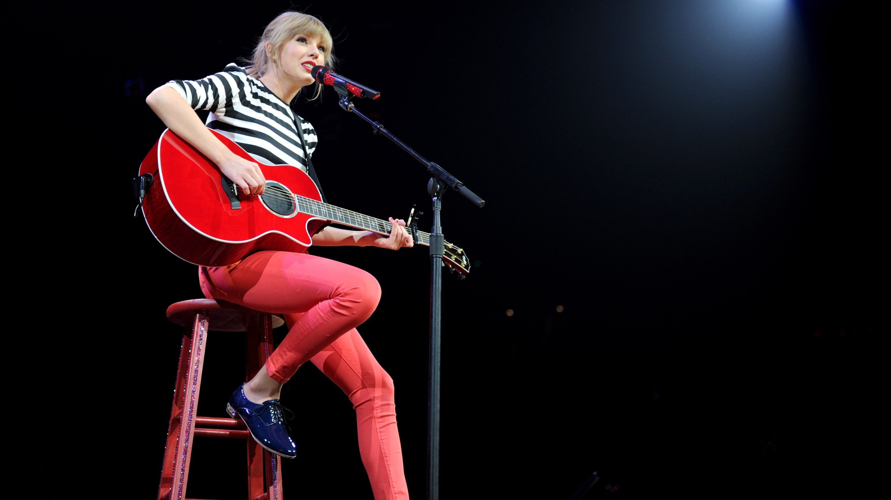

Stream Taylor Swift's fourth studio album on Spotify : Red (Taylor's Version)



Watch Taylor Swift's movie clip for her single "We Are Never Getting Back Together"
Watch Taylor Swift's movie clip for her single "I Knew You Were Trouble"
Watch Taylor Swift's movie clip for her single "Begin Again"
Watch Taylor Swift's movie clip for her single "I Bet You Think About Me" which was released in 2021
Watch Taylor Swift's short movie for her song "All Too Well" which she directed and starred in next to Dylan O'brien and Sadie Sink
Click here to come back to home !